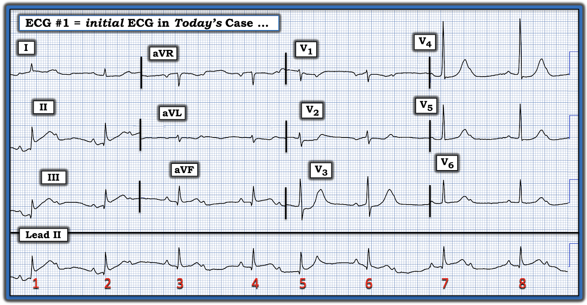
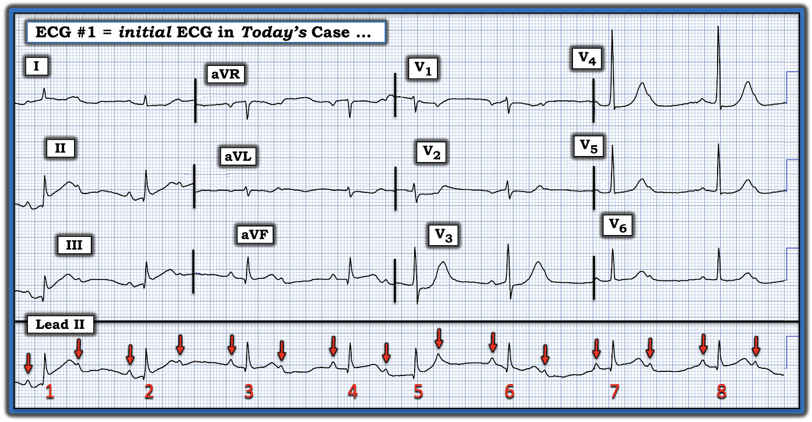
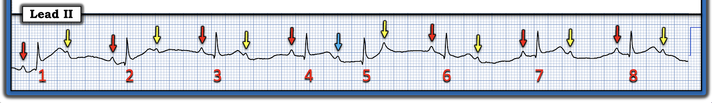
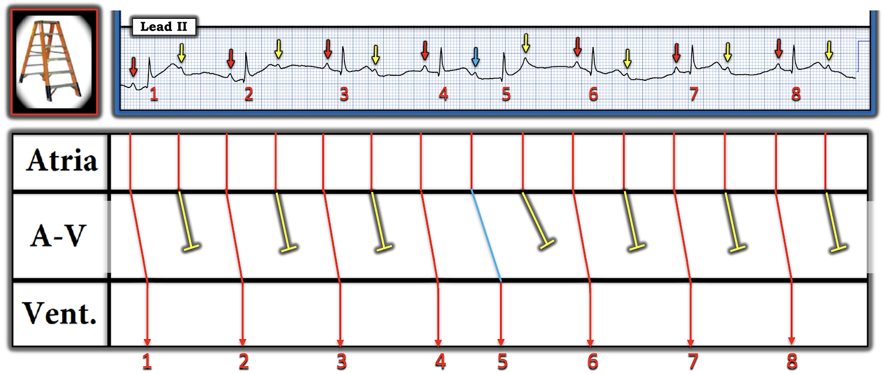
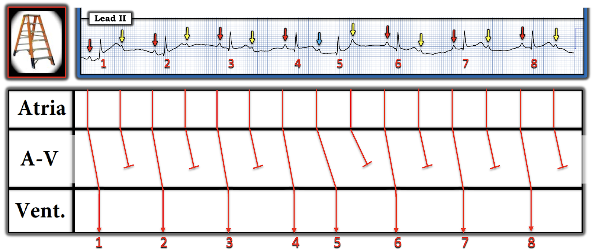
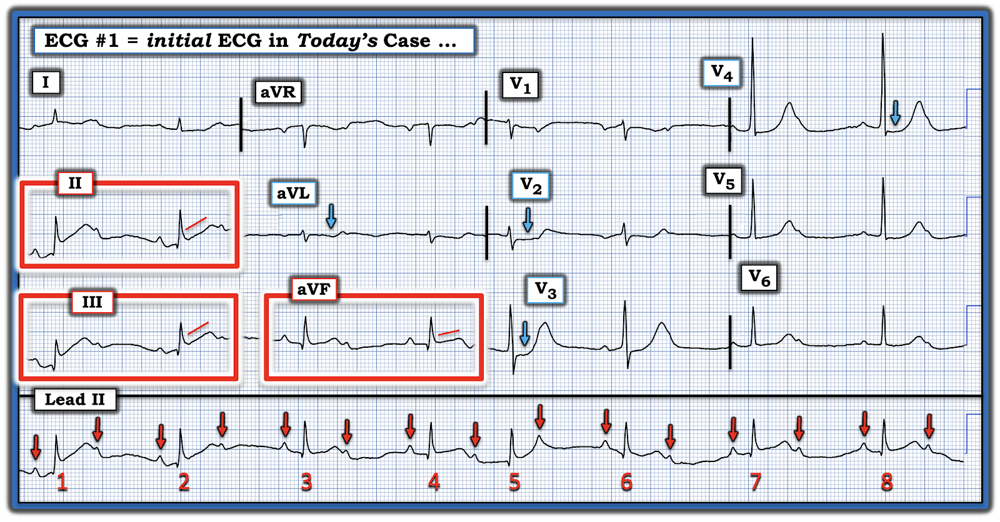
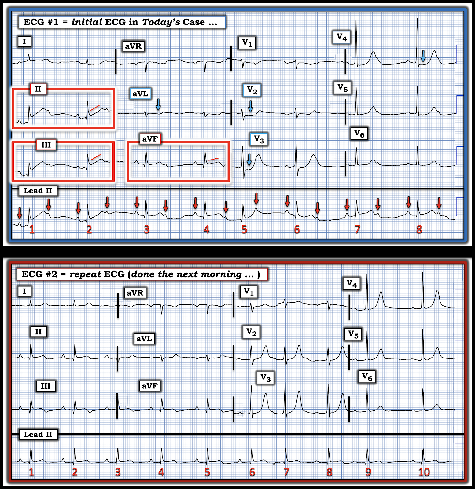
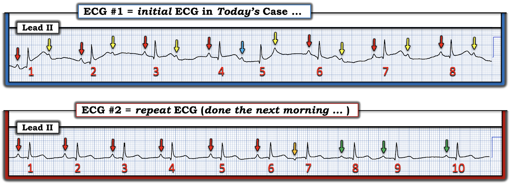
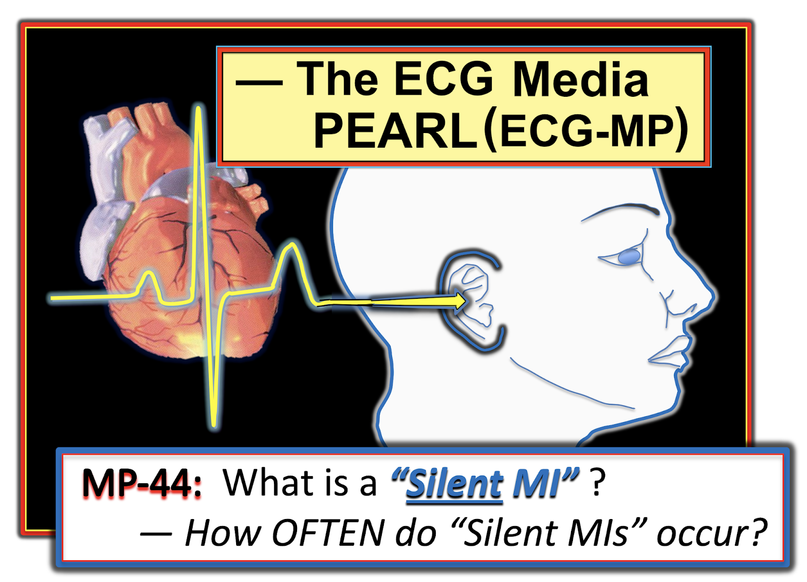
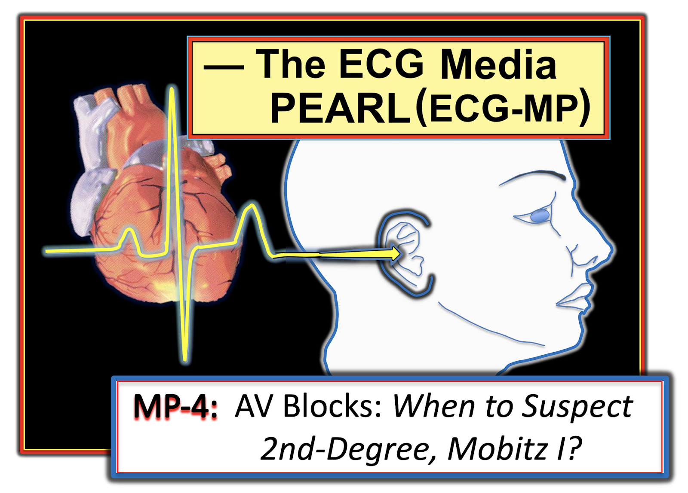

ECG Blog #493 — Vì sao bệnh nhân ngất?
Điện tâm đồ ở Hình 1 được ghi từ một người đàn ông lớn tuổi mắc đái tháo đường — ông kể có một cơn ngất vài ngày trước đó. Không đau ngực. Huyết động ổn định — và về cơ bản không có triệu chứng vào thời điểm ghi điện tâm đồ ở Hình 1.
CÂU HỎI:
- Bạn sẽ diễn giải điện tâm đồ ở Hình 1 như thế nào?
- Điện tâm đồ 12 chuyển đạo có giúp chẩn đoán nhịp không?


============================
SUY NGHĨ CỦA TÔI về điện tâm đồ ở Hình 1:
Ca hôm nay là một ví dụ tuyệt vời cho thấy các phần khác nhau của bản ghi này kết hợp với nhau để "kể một câu chuyện" như thế nào.
- Trước tiên, nhìn vào dải nhịp chuyển đạo II dài: QRS hẹp — tần số tim chung chậm — có sóng P và trông khá đều — nhưng trong phần lớn bản ghi, cứ cách một sóng P lại có một sóng P không được dẫn truyền.
- ĐIỂM THEN CHỐT (PEARL) #1: Bước đơn giản là đánh dấu sóng P giúp dễ nhận ra tình trạng không dẫn truyền của các sóng P xen kẽ (mũi tên ĐỎ ở Hình 2).
- ĐIỂM THEN CHỐT #2: Việc nhịp nhĩ đều, nhưng trong phần lớn bản ghi các sóng P "đúng lúc" xen kẽ lại không được dẫn truyền — xác định nhịp ở Hình 2 là một dạng nào đó của blốc AV độ 2.


ĐIỂM THEN CHỐT #3: Như được nhấn mạnh trong Audio Pearl và Video Pearl ở PHẦN BỔ SUNG #2 bên dưới — Có 3 loại blốc AV độ 2:
- Mobitz I (còn gọi là Wenckebach AV) — trong đó khoảng PR dài dần cho đến khi một nhát bị rớt (không được dẫn truyền).
- Mobitz II — trong đó khoảng PR giữ hằng định cho đến khi một hoặc nhiều nhát liên tiếp không được dẫn truyền.
- Blốc AV độ 2 với dẫn truyền AV 2:1 — trong đó sóng P đều, nhưng cứ cách một sóng P lại có một sóng P không được dẫn truyền. Vì chúng ta không bao giờ thấy 2 sóng P liên tiếp được dẫn truyền — nên không thể biết khoảng PR có dài ra hay không nếu có cơ hội — đó là lý do chúng ta chỉ gọi đơn giản blốc này là blốc độ 2 với dẫn truyền AV 2:1.
- Điểm MẤU CHỐT: Theo kinh nghiệm của tôi — hơn hẳn 90% tổng số blốc AV độ 2 thuộc loại Mobitz I! Có rất nhiều biến thể của Mobitz I, trong đó các nhát thoát, PAC, PVC, nhát dội (echo)… có thể khiến việc nhận ra rối loạn dẫn truyền này khó hơn, vì vậy cần nhớ rằng đại đa số blốc AV độ 2 mà chúng ta gặp là loại Mobitz I.
ĐIỂM THEN CHỐT #4: Khi cân nhắc loại blốc AV độ 2 nào có thể đang hiện diện — nên nhớ rằng:
- Nếu phức bộ QRS hẹp — blốc hầu như luôn là Mobitz I (Mobitz II là một dạng blốc AV độ 2 đáng lo ngại hơn nhiều, xảy ra ở vị trí thấp hơn trong hệ thống dẫn truyền — đó là lý do QRS hầu như luôn rộng trong Mobitz II. Mobitz II thường cần tạo nhịp).
- Nếu trên điện tâm đồ có bằng chứng nhồi máu cơ tim thành dưới và/hoặc thành sau — thì blốc gần như chắc chắn là Mobitz I (vì Mobitz I là biến chứng thường gặp của nhồi máu cơ tim thành dưới và/hoặc thành sau — và thường tự hết mà không cần tạo nhịp nếu tái tưới máu thành công động mạch "thủ phạm").
ĐIỂM THEN CHỐT #5: Hiếm khi có sự chuyển qua lại giữa Mobitz I và Mobitz II. Do đó, nếu khi xem lại theo dõi nhịp — Chúng ta thấy chủ yếu là dẫn truyền AV 2:1, nhưng cũng có những giai đoạn Mobitz I điển hình (khoảng PR dài dần cho đến khi một nhát bị rớt) — thì rất có khả năng mọi giai đoạn blốc AV ở bệnh nhân đó đều là Mobitz I.
- Đó chẳng phải là điều chúng ta thấy ở Hình 2 sao? Hai sóng P liên tiếp được dẫn truyền (các mũi tên ĐỎ trước nhát #4 và 5 ở Hình 2) — và khoảng PR dài ra cho đến khi một nhát bị rớt (tức là, nhát #4 và 5 tạo thành một chu kỳ Wenckebach AV với dẫn truyền AV 3:2).
HÃY XEM Hình 3, 4 và 5 — trong đó tôi đã tô màu các sóng P để dễ nhận ra các sự kiện. Các giản đồ bậc thang (laddergram) minh họa cơ chế của nhịp hôm nay — đó là blốc AV độ 2 loại Mobitz I, chủ yếu với dẫn truyền AV 2:1 — nhưng cũng có 1 nhóm dẫn truyền AV 3:2 giúp khẳng định Wenckebach AV!
- Các sóng P có mũi tên ĐỎ ở Hình 3 là những sóng P dẫn truyền với khoảng PR hằng định (khoảng PR ~0.21 giây — tức ở giới hạn trên của bình thường).
- Các sóng P có mũi tên VÀNG không được dẫn truyền.
- Khoảng PR dài ra trước nhát #5 (được đánh dấu bằng mũi tên XANH DƯƠNG) — sau đó sóng P kế tiếp đến "đúng lúc" nhưng không được dẫn truyền, qua đó hoàn tất một chu kỳ Wenckebach 3:2.






================================
Có bằng chứng nhồi máu cơ tim thành dưới và/hoặc thành sau không?
Ghi nhớ Điểm then chốt #4 — tôi chuyển sự chú ý sang điện tâm đồ 12 chuyển đạo. Mặc dù bệnh nhân hôm nay không kể có CP (đau ngực – Chest Pain) — "mắt" tôi lập tức bị thu hút vào các chuyển đạo dưới (trong các hình chữ nhật ĐỎ ở Hình 6).
- Mặc dù trôi đường nền khiến việc đánh giá sóng ST-T ở chuyển đạo II và III khó khăn — mỗi chuyển đạo dưới ở Hình 6 đều có sóng q nhỏ — đoạn ST thẳng đuỗn với ST chênh lên nhẹ và hình dạng tối cấp.
- Xác nhận rằng các dấu hiệu ST-T ở chuyển đạo dưới này là thật — đến từ sự hiện diện của ST chênh xuống soi gương ở chuyển đạo aVL.
- Xác nhận thêm về một biến cố cấp đang diễn ra đến từ ST chênh xuống dẹt, "dạng bậc thềm" ở chuyển đạo V2,V3,V4 (các mũi tên XANH DƯƠNG ở những chuyển đạo này) — điều này cho thấy có kèm nhồi máu cơ tim thành sau.
ĐIỂM THEN CHỐT #6:
Biết rằng thành dưới và thành sau của thất trái thường có chung nguồn cấp máu — giúp ích rất nhiều khi tìm cách xác nhận một OMI cấp ( = nhồi máu cơ tim do tắc – Occlusion-based Myocardial Infarction):
- Thấy các thay đổi sóng ST-T kín đáo ở cả 3 chuyển đạo dưới, cùng với ST dẹt và chênh xuống rõ nhất ở chuyển đạo V2,V3,V4 (như chúng ta thấy ở Hình 6) — khẳng định OMI dưới-sau cấp cho đến khi chứng minh được điều ngược lại.
- Theo Điểm then chốt #4 — "câu chuyện" mà điện tâm đồ ban đầu hôm nay kể được hoàn chỉnh bởi dấu hiệu nhịp là blốc AV độ 2 Mobitz I.
ĐIỂM THEN CHỐT #7: Câu chuyện mà điện tâm đồ #1 truyền tải cho chúng ta biết rằng bệnh nhân hôm nay đã bị nhồi máu cơ tim cấp gần đây mặc dù không có CP (tức là, bệnh nhân hôm nay đã bị nhồi máu cơ tim "thầm lặng" — như được định nghĩa trong Audio Pearl ngắn ở PHẦN BỔ SUNG của bài hôm nay bên dưới).
- Cơn nhồi máu này nhiều khả năng đã xảy ra vài ngày trước, vào lúc bệnh nhân bị ngất — nhưng mặc dù có nhịp chậm và blốc AV độ 2 như thấy ở Hình 6, bệnh nhân vẫn ổn định huyết động và về cơ bản không có triệu chứng vào lúc ghi điện tâm đồ này. Tuy vậy — troponin vẫn còn tăng.


================================
Ca bệnh hôm nay Tiếp diễn:
Vì bệnh nhân được nhập vào một bệnh viện không có khả năng thông tim — điều trị ban đầu không bao gồm nong mạch vành. Sáng hôm sau — điện tâm đồ ghi lại ở Hình 7 được thực hiện. Bệnh nhân vẫn ổn định huyết động và về cơ bản không có triệu chứng.
CÂU HỎI: Về Hình 7:
- Dựa trên các diễn biến lâm sàng của ca này — Bạn diễn giải điện tâm đồ ghi lại như thế nào?
- Bản ghi lại này có gợi ý rằng điều trị đã thành công không?
- Bệnh nhân có còn blốc AV độ 2 ở điện tâm đồ #2 không?


TRẢ LỜI:
Tần số của nhịp ở điện tâm đồ #2 rõ ràng nhanh hơn so với bản ghi ban đầu. Tôi sẽ tạm hoãn việc xem kỹ nhịp trong giây lát — nhưng thoạt nhìn, tôi thấy các nhát dẫn truyền từ xoang nhưng không có sóng P không dẫn truyền nào.
- ĐIỂM THEN CHỐT #8: Cách tiết kiệm thời gian nhất để diễn giải các điện tâm đồ liên tiếp — là đặt hai bản ghi cạnh nhau (như ở Hình 7) — và so sánh từng chuyển đạo một — cũng như so sánh theo từng vùng giải phẫu. Nếu bạn không so sánh bản ghi này với bản ghi kia theo từng chuyển đạo một — thì rất dễ bỏ sót những thay đổi kín đáo.
- So sánh các bản ghi theo từng chuyển đạo cũng nhanh hơn nhiều! (vì bạn sẽ không phải nhìn đi nhìn lại nhiều lần do quên mất một số phức bộ trông như thế nào).
Ở các chuyển đạo chi:
- So với 3 chuyển đạo nằm trong các hình chữ nhật ĐỎ ở bản ghi ban đầu — ST chênh lên ở các chuyển đạo dưới trông bớt cấp tính hơn ở điện tâm đồ #2 (đoạn khởi đầu ST bớt thẳng đuỗn — và điểm J bớt chênh lên). Sóng T đảo ngược ở phần cuối giờ rõ hơn, đặc biệt ở chuyển đạo III (điều này gợi ý mạnh rằng đã có một mức độ tái tưới máu nào đó của động mạch "thủ phạm"). Các sóng Q ở chuyển đạo dưới không thay đổi.
- Phù hợp với gợi ý tái tưới máu ở điện tâm đồ #2 — là sự gia tăng phần cuối sóng T dương ở chuyển đạo aVL (tức là, hình ảnh soi gương ngược chiều của tình trạng sóng T đảo ngược tăng lên ở chuyển đạo III).
Ở các chuyển đạo trước ngực:
- Sóng R ở chuyển đạo V2 giờ rõ ràng chiếm ưu thế. Vùng chuyển tiếp sớm hơn này ở các chuyển đạo trước ngực phù hợp với diễn tiến của OMI thành sau (tức là, nghiệm pháp soi gương (Mirror Test) dương tính — như mô tả trong ECG Blog #317).
- Thay đổi đáng chú ý nhất ở điện tâm đồ #2 — là diễn tiến của sóng T ở chuyển đạo trước ngực đã trở nên cao hơn, mảnh hơn và cân đối hơn, đặc biệt ở chuyển đạo V2,V3,V4,V5 (tức là, nghiệm pháp soi gương dương tính — với hình dạng sóng T này cho thấy tái tưới máu thành sau).
================================
Để dễ đánh giá sự thay đổi nhịp tim giữa 2 bản ghi ở Hình 7 — tôi đã đặt các dải nhịp chuyển đạo II dài của hai bản ghi này cạnh nhau ở Hình 8.
- Bạn thấy gì?


So sánh 2 dải nhịp ở Hình 8:
Như được minh họa ở Hình 3, 4 và 5 — nhịp ở chuyển đạo II dài của điện tâm đồ #1 là blốc AV độ 2 loại Mobitz I, chủ yếu với dẫn truyền AV 2:1 — nhưng cũng có một nhóm 2 nhát với dẫn truyền AV 3:2 giúp khẳng định Wenckebach AV!
- "Tin tốt" về mặt lâm sàng — là blốc AV độ 2 đã hết vào sáng hôm sau, lúc ghi điện tâm đồ #2!
- Các mũi tên ĐỎ trên dải nhịp chuyển đạo II dài ở điện tâm đồ #2 — cho thấy một nhịp xoang khá đều trong 6 nhát đầu, dù có blốc AV độ 1 (khoảng PR ~0.24 giây).
- Nhát #7 ở điện tâm đồ #2 là một PAC (ngoại tâm thu nhĩ – Premature Atrial Contraction) — với sóng P âm biên độ nhỏ đứng trước nhát #7 cho thấy rõ một vị trí phát xung khác ở nhĩ ( = mũi tên CAM ở điện tâm đồ #2).
- Tôi nghi rằng 3 sóng P có mũi tên XANH LÁ theo sau nhát #7 cũng xuất phát từ một vị trí khác trong nhĩ — vì cả 3 sóng P này có kích thước và hình dạng giống nhau, và nhỏ hơn 6 sóng P có mũi tên ĐỎ đầu tiên.
====================================
- LƯU Ý (Vượt ra ngoài phần cốt lõi) — Một cách giải thích khác, WB Ren trong EKG Club (ngày 22 tháng 8 năm 2025) đã đề xuất rằng thay vì một ổ nhĩ lạc chỗ — một cách giải thích hợp lý hơn (và có khả năng hơn) cho sự thay đổi hình dạng sóng P (các sóng P có mũi tên XANH LÁ theo sau nhát #7 ở Hình 8) là blốc pha 4 (Phase 4 block) trong một phần của nút xoang (nút SA), dẫn đến chỉ một phần nút xoang được khử cực, do đó biểu hiện bằng thay đổi thoáng qua hình dạng sóng P cho đến khi một PAC hoặc PVC khác có thể thiết lập lại điện thế màng (theo cơ chế tương tự như điều xảy ra ở nút AV trong blốc nhĩ thất kịch phát ở những bệnh nhân có hệ thống dẫn truyền Purkinje bị tổn thương nặng).
- Với những ai quan tâm — BẤM VÀO ĐÂY để xem phần giải thích tuyệt vời về blốc pha 4 (blốc phụ thuộc nhịp chậm).
- Thêm về PAVB (blốc nhĩ thất kịch phát – Paroxysmal AV Block) trong ECG Blog #419 —
====================================
ĐIỀU CỐT LÕI:
Liệu sự thay đổi hình dạng sóng P mà tôi mô tả ở trên trong điện tâm đồ #2 là ổ tạo nhịp nhĩ lang thang, chỉ đơn giản là thay đổi ổ phát nhịp nhĩ do PAC, hay blốc pha 4 trong một nút xoang bị thiếu máu cục bộ được khởi phát bởi một PAC — thì chưa chắc chắn.
- Dù thế nào, nhịp ở điện tâm đồ #2 nhiều khả năng là lành tính — và — nhịp mới này là một cải thiện đáng kể so với điện tâm đồ #1 vì: i) Tần số thất đã tăng lên và không còn chậm nữa; và, ii) Không còn blốc AV độ 2.
- ĐIỂM THEN CHỐT #9: Việc hết blốc AV độ 2 ở điện tâm đồ #2 là thêm một dấu hiệu nữa (bên cạnh các sóng T tái tưới máu đã mô tả ở trên trong điện tâm đồ #2) — cho thấy hoặc nhờ điều trị hoặc tự phát, đã có một mức độ tái tưới máu nhất định của động mạch "thủ phạm" (điểm này làm nổi bật phần thứ 2 của Điểm then chốt #4).
================================
Diễn Tiến Cuối cùng của Ca bệnh:
Trong ca hôm nay, việc thông tim bị trì hoãn cho đến khi bệnh nhân có thể được chuyển tới một cơ sở có khả năng thông tim. Kết quả thông tim và các can thiệp điều trị như sau:
- Tắc 100% RCA và hẹp 90% đoạn gần LAD (không có tổn thương đáng kể nào khác).
- EF = 56% trên siêu âm tim.
- Đã tiến hành PCI RCA có hướng dẫn IVUS (siêu âm trong lòng mạch – IntraVascular UltraSound) — và lên kế hoạch PCI LAD theo thì. Bệnh nhân diễn tiến tốt.
==================================
Lời cảm ơn: Xin cảm ơn Aarthi Natarajan (đến từ Chennai, Ấn Độ) đã chia sẻ ca bệnh và bản ghi này.
==================================

==================================
PHẦN BỔ SUNG #1 (ngày 23 tháng 8 năm 2025):
- Để có Thêm tài liệu — về đọc điện tâm đồ trong OMI (không thỏa tiêu chuẩn STEMI dựa trên milimét).

- Trong "My ECG Podcasts" — Hãy xem ECG Podcast #2 (Những sai sót đọc điện tâm đồ dẫn đến bỏ sót tắc động mạch vành cấp).
- Trong 'My ECG Videos" — Hãy xem gần đầu trang đó các VIDEO từ loạt bài giảng MedAll ECG Talks của tôi, ôn lại chẩn đoán nhồi máu cơ tim cấp trên điện tâm đồ — và cách nhận ra OMI cấp khi không thỏa tiêu chuẩn STEMI (được ôn lại trong ECG Blog #406 — Blog #407 — Blog #408).
- Xin LƯU Ý — Với mỗi video trong 6 video MedAll ở đầu trang My ECG Videos, NẾU bạn bấm vào "More" trong phần mô tả, bạn sẽ có một Mục lục có liên kết cho phép nhảy tới phần bàn luận các điểm cụ thể (tức là, tại 5:29 trong video dài 22 phút của Blog #406 — bạn có thể nhảy tới "Bạn CÓ THỂ nhận ra OMI mà không có dấu hiệu STEMI!" ).
T.B. (P.S.): Về một ca bệnh đáng suy ngẫm, gợi nhiều trăn trở, được BS tim mạch Willy Frick bàn luận — kèm phần bình luận của tôi ở cuối trang (trong bài đăng March 17, 2025) — Hãy xem ca này.
- Như BS Frick và tôi nhấn mạnh — không chỉ "mô hình STEMI" hiện hành đã lỗi thời — mà trong những ca như ca chúng tôi mô tả, vì người điều trị chờ cho đến khi tiêu chuẩn STEMI cuối cùng được thỏa — việc thông tim và PCI đã bị trì hoãn hơn 1 ngày.
- NHƯNG — vì phòng thông tim được kích hoạt trong vòng 1 giờ sau điện tâm đồ cuối cùng thỏa tiêu chuẩn STEMI — ca này sẽ đi vào các sổ đăng ký nghiên cứu như là "rất thành công với việc kích hoạt nhanh phòng thông tim trong vòng 1 giờ kể từ khi nhận diện "STEMI". Cách diễn giải sai lầm này về các sự kiện hoàn toàn bỏ qua thực tế lâm sàng là bệnh nhân này đã mất đi một cách không cần thiết một lượng cơ tim đáng kể vì điện tâm đồ ban đầu (ghi >24 giờ trước đó) rõ ràng đã chẩn đoán STEMI(-)/OMI(+) nhưng không được xử trí vì người điều trị bị "mắc kẹt" vào phác đồ STEMI.
- Hệ quả đáng tiếc là tạo ra "bằng chứng ủng hộ" sai lệch trong y văn, gợi ý tính đúng đắn của một mô hình đã lỗi thời và không còn chính xác.
- Thực tế lâm sàng: Nhiều trường hợp tắc động mạch vành cấp không bao giờ xuất hiện ST chênh lên (hoặc chỉ xuất hiện ST chênh lên muộn hơn trong diễn tiến) — trong khi chú ý tới các tiêu chuẩn điện tâm đồ bổ sung trong các tài liệu tham khảo ở trên có thể giúp chúng ta nhận ra OMI cấp ở nhiều ca STEMI(-) này.
==========================
PHẦN BỔ SUNG #2 (ngày 23 tháng 8 năm 2025):
- Dưới đây, từ ECG Blog #228 — một Audio Pearl ngắn về nhồi máu cơ tim "thầm lặng" .
- Tôi cũng đưa vào dưới đây một Pearl Audio — một Pearl Video — và các liên kết tải PDF ôn lại chẩn đoán blốc AV trên điện tâm đồ.
=======================================


ECG Media PEARL #44 (Audio 3:30 phút) — Thế nào là "Nhồi máu cơ tim thầm lặng" (Silent MI)? — và Mức độ THƯỜNG GẶP của "nhồi máu cơ tim thầm lặng" ra sao? (kết quả từ nghiên cứu Framingham).


MỤC TIÊU của tôi trong ECG Video dài 15 phút dưới đây — là làm rõ chẩn đoán điện tâm đồ các blốc AV độ 2, gồm 3 loại:
- Mobitz I ( = Wenckebach AV).
- Mobitz II.
- Blốc AV độ 2 với dẫn truyền AV 2:1.

ECG Video (Media PEARL #52) dài 15 phút này — Ôn lại 3 loại blốc AV độ 2 — cùng với — thuật ngữ khó định nghĩa blốc AV "mức độ cao". Tôi bổ sung nội dung này bằng 2 tài liệu phát tay PDF sau đây.
- Mục 2F (6 trang = Câu trả lời "ngắn") trong cuốn sách ECG-2014 Pocket Brain của tôi cung cấp phần ôn tập nhanh bằng văn bản về các blốc AV (Tài liệu này tải miễn phí).
- Mục 20 (54 trang = Câu trả lời "dài") trong ACLS-2013-Arrhythmias Expanded Version của tôi bàn luận chi tiết về việc các blốc AV LÀ GÌ — và chúng không phải là gì!
=======================
Các bài ECG Blog liên quan đến ca hôm nay:
- ECG Blog #185 — Ôn lại Cách tiếp cận Ps, Qs, 3R để đọc nhịp một cách hệ thống.
- ECG Blog #188 — Ôn lại cách đọc và vẽ giản đồ bậc thang (kèm LIÊN KẾT tới hơn 50 ca có giản đồ bậc thang — nhiều ca có minh họa tuần tự từng bước).
- ECG Blog #164 — Ôn lại từng bước chẩn đoán blốc AV độ 2 Mobitz I (kèm minh họa giản đồ bậc thang tuần tự).
- ECG Blog #168 — Một ca Wenckebach AV hai tầng (giản đồ bậc thang) phức tạp.
- ECG Blog #154 và ECG Blog #55 và ECG Blog #224 và ECG Blog #232 — Nhồi máu cơ tim cấp kèm Wenckebach AV.
- ECG Blog #63 — Mobitz I kèm nhát thoát bộ nối.
- ECG Blog #344 — Mobitz I hay II hay không phải cả hai ...
- ECG Blog #416 — Thêm một ca OMI & blốc AV ...
- ECG Bog #472 — Thêm một ca blốc AV ...